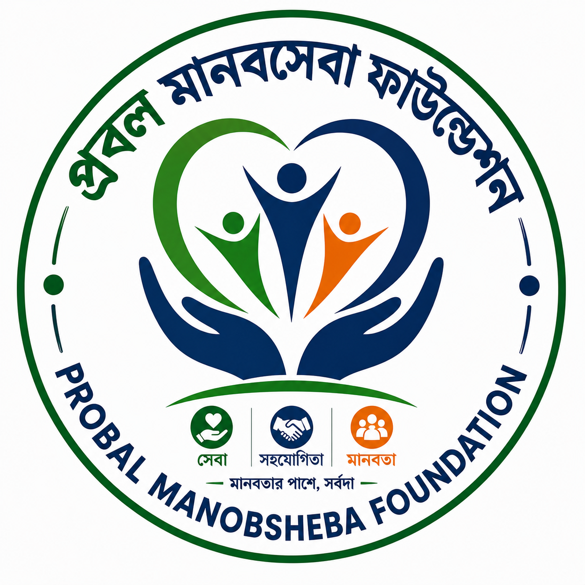

মানবতার পাশে, সর্বদা
Probal Manobsheba Foundation (PMF) is a voluntary humanitarian organization committed to serving people through compassion, unity and volunteerism.
Become a Volunteer
Probal Manobsheba Foundation (PMF) is a voluntary humanitarian organization committed to serving people through compassion, unity and volunteerism.
Become a VolunteerProbal Manobsheba Foundation (PMF) is a non-profit voluntary humanitarian organization dedicated to helping vulnerable communities through humanitarian service, youth empowerment, disaster response, education support, healthcare assistance and sustainable community development.
To serve humanity with honesty, transparency and dedication by providing humanitarian support, encouraging volunteerism and creating positive social impact.
To build a compassionate, responsible and empowered society where every individual has the opportunity to live with dignity and receive support during difficult times.
Humanity, Integrity, Respect, Unity, Accountability, Volunteerism and Sustainable Development are the principles that guide every activity of PMF.
Together we are building a stronger humanitarian community through dedication, transparency and volunteerism.
PMF regularly organizes humanitarian and community development activities across Bangladesh.
Emergency blood donor management and blood donation campaigns.
Providing food packages for underprivileged families during Ramadan and emergencies.
Blanket distribution for poor and helpless people during winter.
Emergency rescue, relief distribution and humanitarian assistance.
Educational materials, scholarships and student support activities.
Tree plantation, awareness campaigns and community development projects.
Some memorable moments from Probal Manobsheba Foundation (PMF) humanitarian activities.